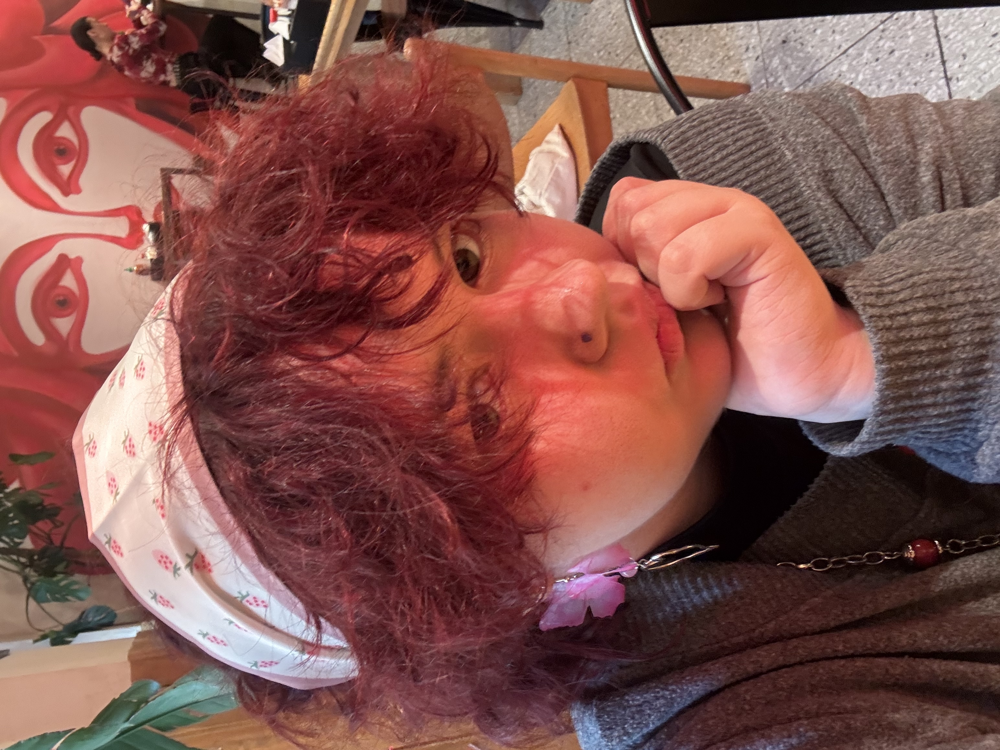
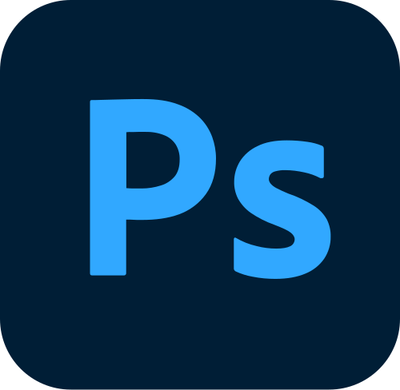
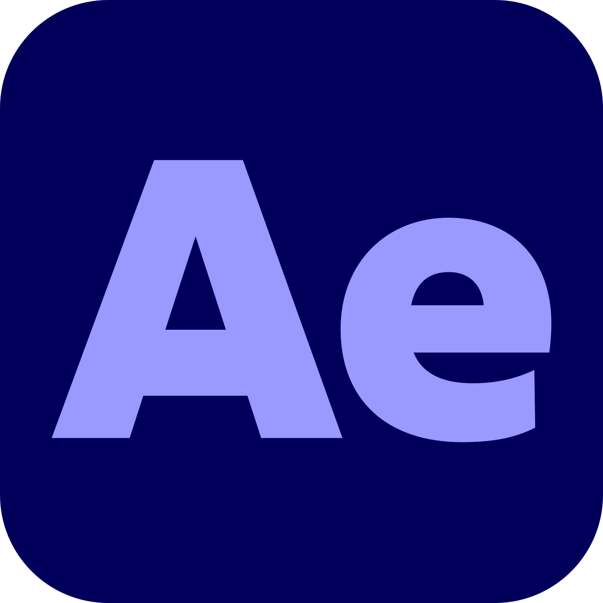
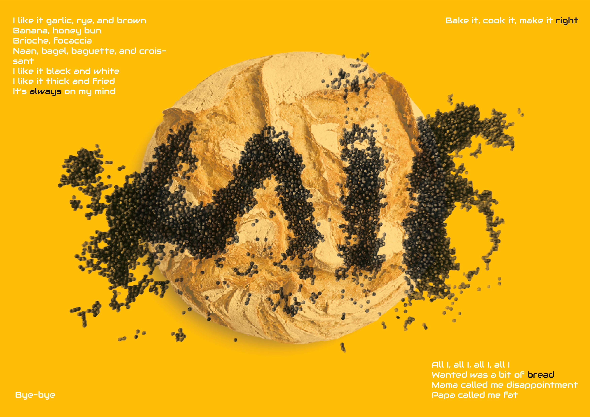
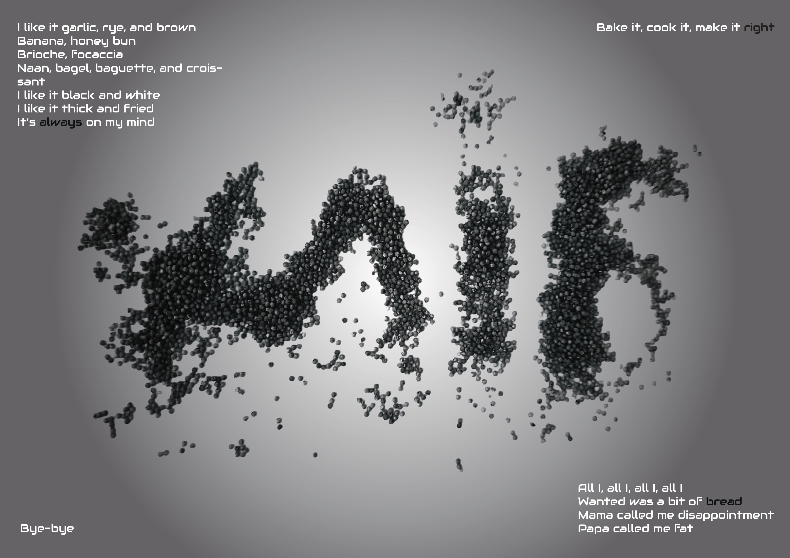

PORT
FO
LIO

ABOUT
ME
Kira | Graphic & 3D Designer
Currently studying at the Lviv National Academy of Arts (LNAA).
I specialize in
creating visual solutions by blending 2D graphics with 3D environments.
Software Toolkit:
- Design: Photoshop, Illustrator, InDesign.
- Motion: After Effects, Premiere Pro.
- 3D: Maya, 3ds Max, ZBrush.
Skills and expertise
Graphic Design
• Visual Identity & Branding
• Typography & Layout
• Poster & Cover Design
3D & Motion
• High/Low Poly Modeling
• Texturing & Shading
• Motion Graphics
Developed a comprehensive brand identity including logo design and a complete brand book. Additionally, specialized in logo animation and 3D motion graphics to enhance the brand's visual presence.




Brand “Fruit”
Brand description
Brand Philosophy:
In an era where diversity and innovation drive every
industry, we believe that beverages must constantly evolve. At Fruit, we aim to redefine the
drinking experience by crafting unique flavor profiles. Our mission is to keep the product
relevant for the modern palette by experimenting with bold ingredient fusions. While we
embrace the new, we never overlook the timeless appeal of the classics. We offer a
sophisticated take on this traditional beverage: a refined canon of beer infused with
genuine fruit juices and berry nectars.
Core Values & Expertise:
Our primary goal is to satisfy the customers'
craving for both quality and originality. We prioritize excellence by using only fresh,
authentic juices in our production. A standout feature of our brand identity is the focus on
the ritual of consumption—alongside the beverage, we provide uniquely designed glassware
that enhances the sensory experience of every sip.
Bread
Bread & Form: Experimental Typography
This project explores the intersection of culinary art and graphic design. Using food elements as a medium, I created a tactile typographic compass that plays with texture and organic shapes. The goal was to transform a mundane object—bread—into a canvas for visual storytelling, emphasizing the raw and "crumbs" nature of the product through gritty, granular lettering.

